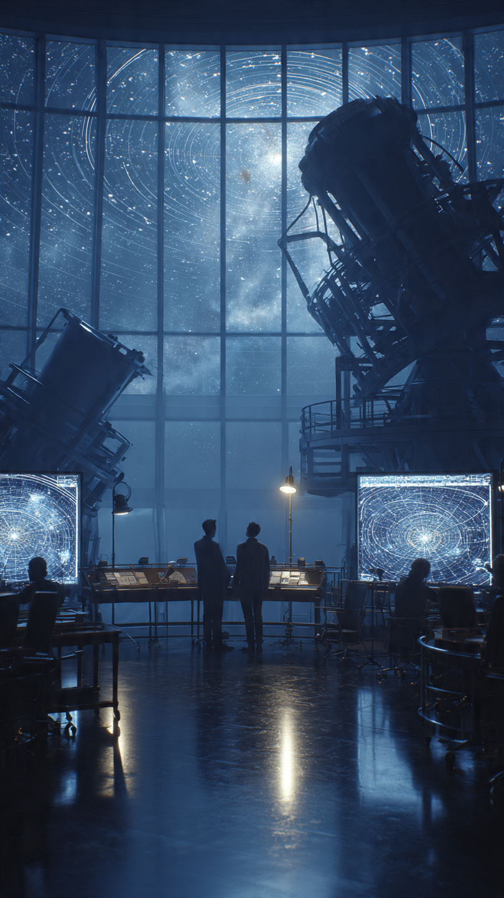

```html
الكوكب المفقود في أطراف النظام الشمسي... هل هو موجود؟ | اكتشافات وعلوم
```
منذ أن عرف الإنسان السماء، كان يحاول اكتشاف كل ما يدور حوله.
رأى الكواكب القريبة من الأرض.
وتابع حركاتها.
واستخدم التلسكوبات لاكتشاف عوالم بعيدة لم تكن مرئية بالعين.
لكن في أطراف النظام الشمسي...
قد يكون هناك شيء كبير يختبئ في الظلام.
كوكب لم يره أحد حتى الآن.
بدأت القصة عندما لاحظ العلماء شيئًا غريبًا.
ففي منطقة بعيدة جدًا خلف كوكب نبتون، توجد أجسام جليدية صغيرة تدور حول الشمس.
هذه المنطقة تُعرف باسم حزام كايبر.
وكان من المفترض أن تتحرك هذه الأجسام بطريقة عشوائية إلى حد ما.
لكن بعض مداراتها بدت وكأنها تتأثر بقوة خفية.
في عام 2016، اقترح العالمان مايك براون وكونستانتين باتيجين فكرة مثيرة.
قالا إن أفضل تفسير لهذه الحركات الغريبة قد يكون وجود كوكب كبير بعيد جدًا عن الشمس.
أطلق العلماء على هذا الجسم المحتمل اسم:
الكوكب التاسع.
وفقًا للحسابات، قد يكون هذا الكوكب أكبر من الأرض بعدة مرات.
وقد يدور حول الشمس في مسار هائل يستغرق آلاف السنين لإكمال دورة واحدة.
لكن المشكلة كانت واضحة...
أين هو؟
رغم قوة الحسابات، لم يتمكن أي تلسكوب حتى الآن من تصوير الكوكب التاسع مباشرة.
فالمنطقة التي يُعتقد أنه يوجد فيها بعيدة جدًا، والضوء الذي يعكسه قد يكون ضعيفًا للغاية.
إن العثور عليه يشبه البحث عن نقطة صغيرة جدًا في محيط مظلم لا نهاية له.
بدأ العلماء باستخدام أقوى التلسكوبات والمسوح الفلكية للبحث عنه.
كل صورة للسماء قد تحمل الإجابة.
وكل اكتشاف جديد قد يقربهم من حل اللغز.
لكن السؤال بقي:
هل يوجد فعلًا كوكب عملاق في أطراف النظام الشمسي؟
أم أن هناك تفسيرًا آخر لهذه الحركات الغريبة؟
📷 الصورة رقم 1

بعد اقتراح وجود الكوكب التاسع، بدأ العلماء في رحلة بحث ضخمة.
لكن العثور على كوكب في أطراف النظام الشمسي ليس أمرًا سهلًا.
فكلما ابتعد الجسم عن الشمس، قل الضوء الذي يصل إليه، وأصبح من الصعب جدًا رؤيته حتى بأقوى التلسكوبات.
بدلًا من البحث العشوائي، استخدم العلماء طريقة ذكية.
درسوا حركة الأجسام الصغيرة الموجودة في حزام كايبر.
فإذا كان هناك كوكب ضخم قريب منها، فإن جاذبيته قد تؤثر على مساراتها.
مثلما تؤثر جاذبية القمر على حركة المحيطات على الأرض.
بدأ الباحثون بتحليل آلاف الصور والبيانات القادمة من المراصد حول العالم.
كانوا يبحثون عن نقطة صغيرة تتحرك ببطء بين النجوم.
فالكواكب لا تظهر كنجوم ثابتة، بل تتحرك مع الوقت مقارنة بالخلفية البعيدة.
ظهرت بعض الأدلة التي دعمت فكرة وجود الكوكب التاسع.
فبعض الأجسام البعيدة كانت تتحرك في اتجاهات متشابهة بشكل جعل العلماء يتساءلون:
هل يمكن أن يكون هناك جسم كبير يجذبها؟
لكن ليس كل العلماء اقتنعوا بالفكرة.
فبعضهم يرى أن هذه التجمعات في المدارات قد تكون نتيجة طريقة اختيار الأجسام التي تم اكتشافها، وليس بسبب وجود كوكب جديد.
وهذا جزء طبيعي من العلم.
فالنظريات لا تُقبل فقط لأنها تبدو منطقية، بل تحتاج إلى أدلة قوية ومتكررة.
ولهذا تستمر عملية البحث.
تلسكوبات جديدة أصبحت جاهزة.
وبيانات أكثر يتم تحليلها.
وكل عام تظهر معلومات جديدة قد تقرب العلماء من الإجابة.
فإذا كان الكوكب التاسع موجودًا فعلًا...
فإن اكتشافه سيغير خريطة النظام الشمسي، وسيضيف عضوًا جديدًا إلى عائلة الكواكب.
لكن إذا لم يكن موجودًا...
فسيتعلم العلماء شيئًا جديدًا عن كيفية تحرك الأجسام في الفضاء.
وفي الحالتين...
سيكون البحث نفسه اكتشافًا مهمًا.
📷 الصورة رقم 2
لو تم اكتشاف الكوكب التاسع يومًا ما، فسيكون واحدًا من أعظم الاكتشافات في تاريخ علم الفلك.
فالعلماء لا يبحثون عن مجرد كوكب جديد فقط...
بل يبحثون عن قطعة مفقودة من قصة تكوّن نظامنا الشمسي.
يعتقد الباحثون أن هذا الكوكب، إذا كان موجودًا، قد يكون وُلد قريبًا من الشمس منذ مليارات السنين، ثم دفعته تفاعلات الجاذبية مع الكواكب العملاقة بعيدًا حتى وصل إلى مداره الحالي البعيد جدًا.
وهذا يعني أنه قد يحمل معلومات عن الفترة الأولى التي تشكلت فيها الكواكب.
قد يساعد اكتشافه العلماء على فهم سبب وجود بعض الأجسام الجليدية في أماكن معينة، ولماذا تتحرك بعض الأجرام البعيدة بطريقة مختلفة عن التوقعات.
كما قد يكشف عن طريقة انتشار الكواكب في الأنظمة النجمية الأخرى.
لكن حتى الآن...
يبقى الكوكب التاسع مجرد احتمال علمي.
هناك أدلة تشير إلى وجوده، لكن لا يوجد دليل نهائي مثل صورة مباشرة أو قياس واضح لكتلته.
ولهذا يستمر العلماء في البحث دون أن يعلنوا أنه موجود بشكل مؤكد.
وهذه هي طبيعة العلم.
أحيانًا يبدأ الاكتشاف بسؤال صغير:
"لماذا تتحرك هذه الأجسام بهذه الطريقة؟"
ثم يتحول السؤال إلى رحلة طويلة تستخدم فيها أقوى الأدوات التي صنعها الإنسان.
ربما في المستقبل، يلتقط أحد التلسكوبات صورة لنقطة صغيرة تتحرك في ظلام الفضاء.
وقد تكون تلك النقطة هي الكوكب الذي ظل مختبئًا لمليارات السنين.
وهكذا...
بدأت القصة بحركات غريبة لأجسام صغيرة في أطراف النظام الشمسي.
ثم تحولت إلى بحث عن عالم جديد محتمل.
كوكب بعيد لا نعرف هل هو موجود أم لا...
لكن مجرد البحث عنه جعلنا نفهم الكون بشكل أعمق.
فالفضاء لا يزال مليئًا بالأسرار.
وربما في كل زاوية مظلمة...
هناك اكتشاف ينتظر من يجده.